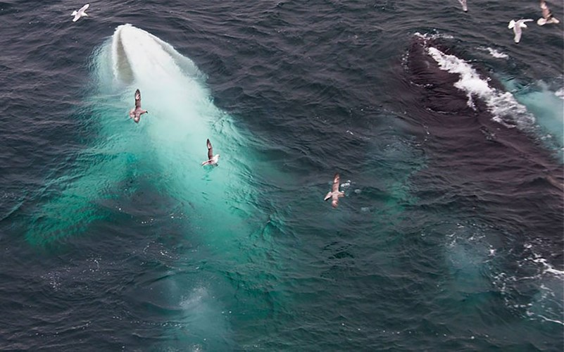

Theo tờ Mirror, các nhà nghiên cứu khoa học hàng hải Croatia mới phát hiện thêm một con cá heo bạch tạng ở Địa Trung Hải. Con cá heo bạch tạng này được coi là 1 trong 20 cá thể vô cùng hiếm trên thế giới.
Con cá heo bạch tạng này được nhóm các nhà khoa học đặt tên là Albus. Albus thuộc giống cá heo mũi dài. Trong khi những con cá heo mũi dài bình thường có làn da màu ghi thì hiện tượng đột biến gen khiến Albus có làn da màu trắng và đôi mắt màu hồng. Ngoài ra các chuyên gia còn cho biết, Albus mang giới tính đực và có vẻ vẫn trong tình trạng sức khỏe tốt.
Albus được tìm thấy tại khu vực dọc bờ biển giữa Croatia và Ý. Được biết, trước đó, các nhà khoa học đã từng nhìn thấy Albus tại phía Đông thành phố cảng Ravenna của Ý.
Ông Plavi Svijet, phát ngôn viên của Tổ chức Môi trường Croatia cho biết, đây là con cá heo bạch tạng đầu tiên không chỉ xuất hiện ở Biển Adriatic mà còn cả ở Địa Trung Hải.

Mặc dù có ngoại hình khác biệt nhưng cá heo bạch tạng không yếu hơn so với đồng loại. Điều đáng lo ngại hơn cả là chúng dễ bị những kẻ săn mồi tấn công hơn.
Nguồn : Internet
Bình luận của bạn: